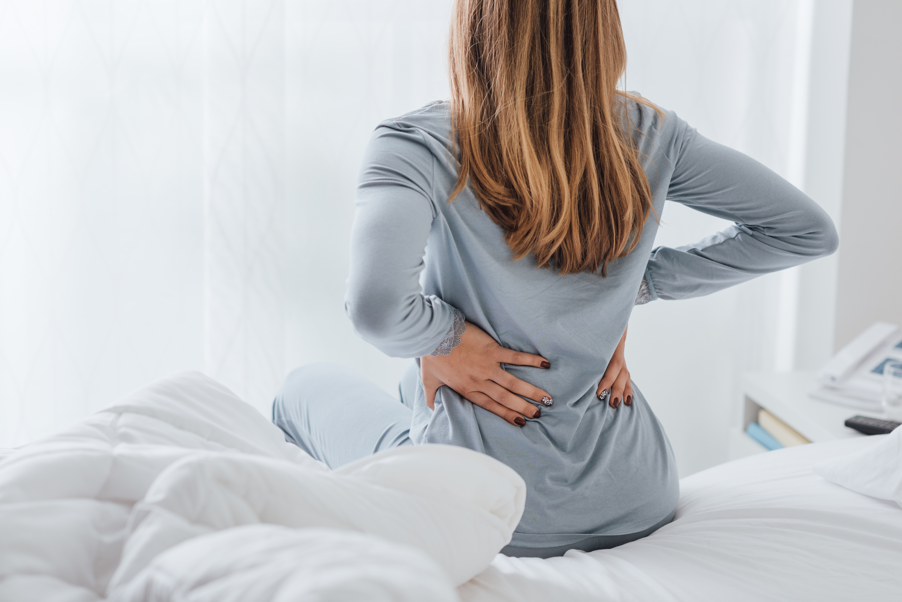
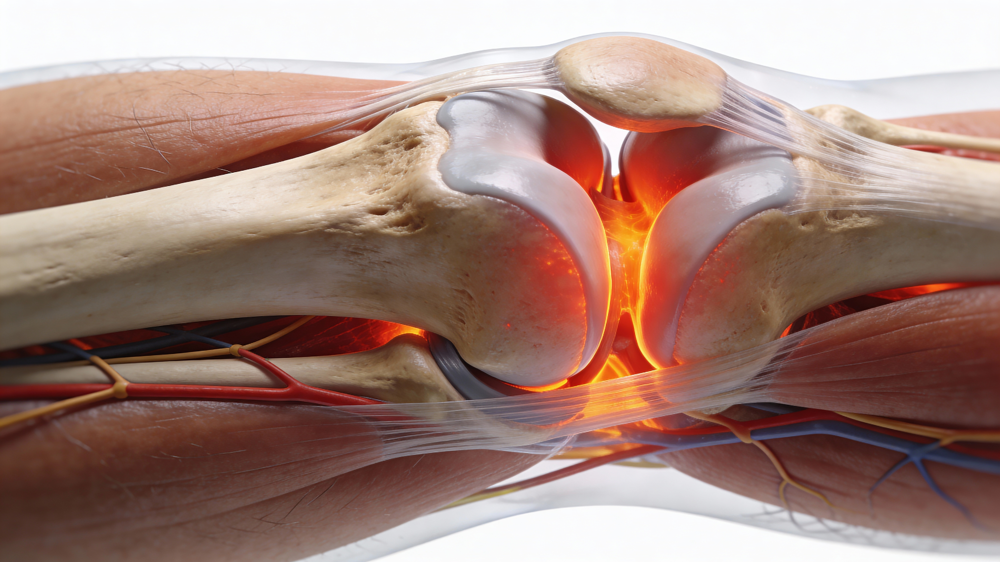
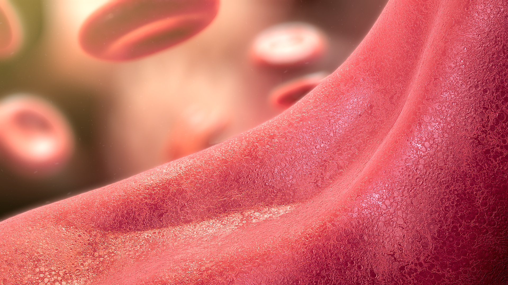
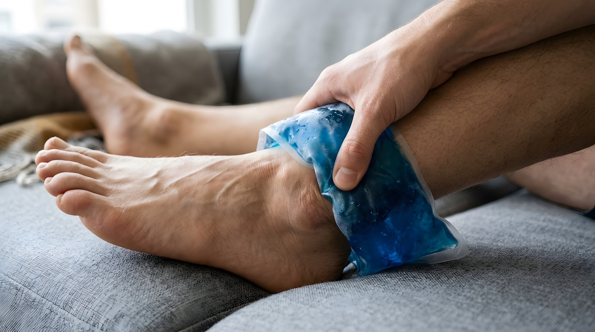
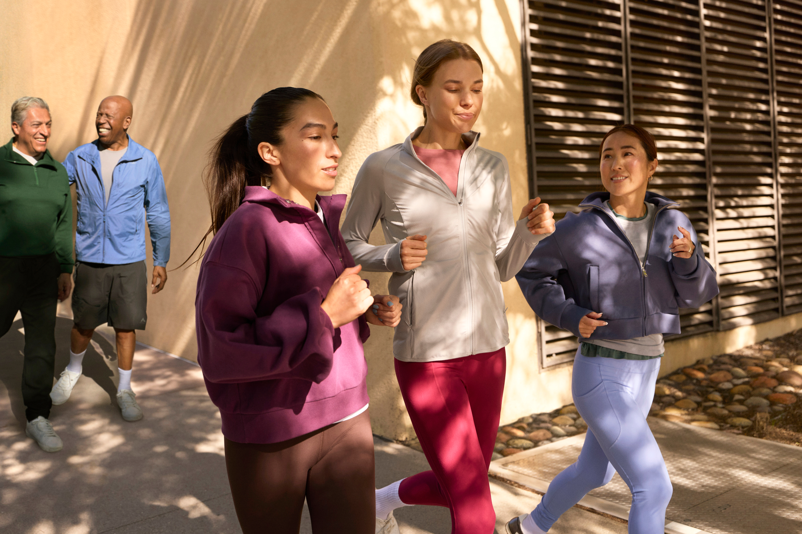

Dor nas costas
O que pode significar, quando buscar um médico e como tratar?

Dor nas costas ao acordar ou após períodos de repouso
Dor nas costas persistente que melhora com exercícios físicos e piora durante o repouso pode estar relacionada à espondilite anquilosante. A dor e a rigidez costumam ser mais perceptíveis pela manhã, ao acordar, e depois de períodos sem movimentação.1
Além da região lombar, o desconforto pode alcançar os quadris, as nádegas e a parte posterior das coxas. Esse padrão de dor é diferente daquele em que o repouso costuma trazer alívio, pois, na espondilite anquilosante, a movimentação ao longo do dia ou a prática de exercícios tende a reduzir os sintomas.1
Cerca de
8 em cada 10 pessoas
apresentam esse problema em algum momento da vida.
Quando dor e rigidez apresentam esse padrão, especialmente quando persistem pela manhã ou após períodos de repouso, é importante relatar essas características ao médico para que a causa seja investigada.
O que é espondilite anquilosante?
A espondilite anquilosante é uma doença inflamatória que afeta principalmente os ossos e as vértebras da coluna e também pode atingir as articulações localizadas na região das nádegas.1
A inflamação não se limita à coluna. Ombros, costelas e articulações das mãos e dos pés também podem apresentar dor, rigidez e sinais inflamatórios.3
Em casos mais avançados, a inflamação pode favorecer a formação ou a fusão de ossos na coluna, processo conhecido como anquilose. Com isso, a coluna pode perder flexibilidade e até tornar uma respiração profunda mais difícil.3
A doença ocorre com maior frequência em homens, embora também afete mulheres, e costuma surgir em adultos jovens. Suas causas ainda são estudadas, mas já são conhecidos genes associados ao seu desenvolvimento.3,4
Ainda não existe cura para a espondilite anquilosante,
mas existem tratamentos e medicamentos voltados à redução dos sintomas, ao controle da dor e ao retardamento da progressão da doença.
Por que a dor pode piorar com o repouso?
Entre os sinais mais característicos estão o enrijecimento após períodos de repouso, a rigidez matinal e a dor na parte baixa das costas e nas nádegas.1
As ênteses são pontos do corpo em que tendões e ligamentos se ligam aos ossos, como ocorre nas vértebras, cotovelos, joelhos e pés. Em pessoas com espondilite anquilosante, essas regiões podem ficar inflamadas, originando entesites. Períodos de repouso podem agravar essa inflamação e, consequentemente, aumentar a dor.5

Como é feito o diagnóstico da espondilite anquilosante?
O reumatologista é o especialista indicado para diagnosticar e tratar condições que afetam articulações, músculos, tendões, ligamentos, tecido conectivo e ossos.1
A investigação da espondilite anquilosante considera:
- histórico clínico;3,4
- exame físico;3,4
- exames de imagem;3,4
- exames de sangue;3,4
Quando existem sinais compatíveis com a espondilite anquilosante, é importante buscar avaliação médica o quanto antes para que o diagnóstico e o tratamento adequados possam ser definidos.
O que é o HLA-B27 e por que esse exame pode ser solicitado?
O diagnóstico precoce pode fazer diferença no tratamento da espondilite anquilosante. Como a investigação pode ser desafiadora e demorada, o exame para detectar o HLA-B27 pode fazer parte do processo diagnóstico.6,7
Os antígenos leucocitários humanos, chamados de HLAs, são proteínas que auxiliam o sistema imunológico a diferenciar as próprias células do organismo de elementos estranhos que precisam ser combatidos. O HLA-B27 participa de processos ligados à inflamação e à defesa do organismo.7

Como é feito o exame HLA-B27?
Quando há suspeita de uma espondiloartrite, mas os sintomas, o histórico clínico e os demais exames ainda não permitem uma conclusão, o HLA-B27 pode ser solicitado.8
O exame é feito por uma coleta simples de sangue e não exige jejum. A amostra costuma ser retirada de uma veia do braço ou da mão, e o resultado é informado como positivo ou negativo.7
O resultado do exame HLA-B27 não se modifica ao longo da vida e, em geral, só precisa ser repetido quando existe suspeita de erro laboratorial.
O que significa um resultado positivo para HLA-B27?
Um resultado positivo não significa, por si só, que a pessoa tenha espondilite anquilosante. O HLA-B27 é uma proteína normal e está presente em aproximadamente 7% a 10% da população, inclusive em pessoas que não apresentam a doença.6
A presença do HLA-B27 está associada a maior risco para algumas condições autoimunes e pode contribuir para a investigação da espondilite anquilosante, cujo risco aumenta quando o exame é positivo.6,8
A associação entre HLA-B27 e espondilite anquilosante varia entre grupos étnicos. Aproximadamente 95% dos caucasianos com espondilite anquilosante apresentam HLA-B27 positivo, enquanto esse percentual é de cerca de 50% entre afrodescendentes.6,8
O exame HLA-B27 isoladamente não diagnostica a doença. Ele é utilizado em conjunto com outros exames e com a avaliação clínica realizada pelo reumatologista para ajudar a confirmar ou excluir o diagnóstico.6-8
Também existem pessoas com diagnóstico de espondilite anquilosante que não apresentam HLA-B27 no sangue. Por isso, critérios clínicos, laboratoriais e radiológicos continuam sendo fundamentais na confirmação diagnóstica.6,8
O que são êntese e entesite?
A entesite pode ser um sinal precoce de espondilite anquilosante. A êntese é o ponto em que tendões (responsáveis por ligar músculos aos ossos e ligamentos, que ligam os ossos entre si) se conectam ao osso. Quando esses locais ficam inflamados, ocorre a entesite, que pode provocar dor e inchaço.9
O desenvolvimento de entesite tem sido associado à presença do HLA-B27, também relacionado à espondilite anquilosante. Até 58% das pessoas com a doença também podem apresentar entesite.10
A associação é descrita como importante a ponto de a entesite ser considerada uma característica da espondilite anquilosante.11
Onde a entesite pode causar dor?
A entesite pode ocorrer em qualquer região em que um tendão se conecta a um osso. Entre os locais associados à espondilite anquilosante estão a pelve e a região lombar, mas a dor também pode aparecer em regiões periféricas.11
- joelhos;11
- calcanhares;11
- solas dos pés;11
Dor persistente nessas áreas, assim como na região lombar, pode funcionar como sinal de alerta para entesite e para espondilite anquilosante.11
Como é feito o diagnóstico da entesite?
A identificação da entesite pode ser difícil porque os sintomas mais comuns nem sempre estão presentes e os métodos diagnósticos podem apresentar limitações. Assim como ocorre na espondilite anquilosante, o diagnóstico precoce é considerado importante.12,13
Na avaliação física, o médico pode pressionar as extremidades dos tendões e ligamentos para verificar se existe dor. Registrar os sintomas e levá-los à consulta também pode ajudar na investigação.13-15
Quando a avaliação física não é suficiente, exames de imagem, como ultrassonografia e ressonância magnética, podem ser utilizados como apoio diagnóstico.13-15

Qualidade de vida e cuidados com a entesite
Durante a investigação diagnóstica, algumas medidas de autocuidado podem contribuir para o manejo do desconforto.16
- Banhos quentes.16
- Uso de palmilhas.16
- Compressas de gelo para ajudar a reduzir o inchaço das articulações.16
- Massagens realizadas por profissionais, que podem contribuir para o alívio da dor e para a qualidade de vida.16
Uma dor persistente não deve ser ignorada. Procure ajuda médica para que a causa seja investigada e tratada adequadamente.
Exercício físico e espondiloartrite axial
A atividade física pode fazer parte do manejo da espondiloartrite axial, respeitando as particularidades de cada pessoa. Antes de iniciar um programa de exercícios, converse com o médico ou fisioterapeuta.
Mesmo em dias mais difíceis, alongamentos suaves podem fazer parte da rotina, sempre sem ultrapassar os próprios limites.
Gillian Eames conviveu com dor e rigidez nas costas por quase oito anos antes de receber o diagnóstico de espondiloartrite axial, no início da década de 1980. Devido aos diagnósticos incorretos daquele período, sua coluna e sua postura já apresentavam danos quando a doença foi identificada.
Ao longo dos anos, passou por diferentes tratamentos e por uma cirurgia para correção da coluna. A partir de aconselhamento e da busca por maior mobilidade e alívio da dor, passou a incorporar exercícios à rotina, ressaltando que movimentos pequenos também podem representar atividade física relevante para quem vive com uma doença crônica.17
Evite se forçar excessivamente e converse com o médico antes de experimentar uma nova atividade.

O exercício pode fazer parte da rotina diária, assim como a adesão ao tratamento medicamentoso. Trabalhar a postura pode ajudar a fortalecer a região central do corpo, favorecer o alinhamento da coluna e facilitar a realização das tarefas do dia a dia.17
Para acompanhar a própria postura, Gillian verifica seu alinhamento diante do espelho e ao longo do dia e utiliza uma marca na parede de casa para observar se está perdendo altura.
A respiração profunda pode ajudar a manter a caixa torácica flexível e preservar a capacidade pulmonar.18
Os exercícios respiratórios podem ser combinados com a rotina de postura. Uma possibilidade é inspirar profundamente, manter o ar por alguns segundos enquanto se faz uma contagem regressiva e repetir o exercício três vezes.18
Ao caminhar, mantenha as costas eretas e associe a caminhada aos exercícios respiratórios.18
Para pessoas com doença mais avançada, alongamentos ao longo do dia, caminhadas regulares e exercícios de postura e respiração podem fazer parte da rotina.
Outras pessoas podem conseguir realizar exercícios mais variados. É importante identificar, junto ao médico, quais atividades são adequadas para cada situação.
A natação é um exercício de resistência em que o impacto do movimento sobre o corpo é menor do que em atividades realizadas fora da água e pode contribuir para força e flexibilidade.19
O nado crawl pode ser uma possibilidade, mas pode não ser adequado para todas as pessoas com espondiloartrite axial, dependendo do estágio da doença. Converse com o médico antes de iniciar qualquer estilo de natação.19
Exercícios aeróbicos na água, como a hidroginástica, também podem favorecer a flexibilidade e o fortalecimento dos principais músculos quando forem indicados para a pessoa.
O mais importante é conhecer os próprios limites e escolher atividades que funcionem para cada indivíduo.
Gillian Eames é colaboradora do projeto Vivendo Com EA (ThisASLife.com), voltado à comunidade de pessoas com espondiloartrite axial. Os colaboradores recebem compensação financeira pelas horas dedicadas, sem interferir nas opiniões ou perspectivas compartilhadas.
Artigos relacionados
Referências
1. Sociedade Brasileira de Reumatologia. Espondiloartrites. Disponível em: https://www.reumatologia.org.br/doencas-reumaticas/espondiloartrites/. Acesso em maio de 2025.
2. MedlinePlus, National Institutes of Health (NIH). Back Pain. Disponível em: https://medlineplus.gov/backpain.html. Acesso em maio de 2025.
3. Spondylitis Association of America. Overview of Ankylosing Spondylitis. Disponível em: https://www.spondylitis.org/Ankylosing-Spondylitis. Acesso em maio de 2025.
4. NIH. Ankylosing Spondylitis. Disponível em: https://www.niams.nih.gov/health-topics/ankylosing-spondylitis. Acesso em maio de 2025.
5. Blog Artrite Reumatoide. Reumatismos de Partes Moles. Disponível em: https://artritereumatoide.blog.br/entesite-diferenca-espondilite-anquilosante-da-artrite-reumatoide-saiba-mais/. Acesso em maio de 2025.
6. Lab Tests Online. Ankylosing Spondylitis. Disponível em: https://www.testing.com/tests/hla-b27/. Acesso em maio de 2025.
7. MedLine Plus. HLA-B27 antigen. Disponível em: https://medlineplus.gov/ency/article/003551.htm. Acesso em maio de 2025.
8. Spondylitis Association of America. Diagnosis of Ankylosing Spondylitis. Disponível em: https://www.spondylitis.org/Ankylosing-Spondylitis/Diagnosis. Acesso em maio de 2025.
9. Schett G. Enthesitis: from pathophysiology to treatment. Nat Rev Rheumatol. 2017;13(12):731-741.
10. Spadaro A. Clinical and imaging assessment of peripheral enthesitis in ankylosing spondylitis. Int J Clin Rheumatol. 2012;7(4):391-396.
11. Kelsall J. What Is the Location of Enthesitis in Ankylosing Spondylitis and Psoriatic Arthritis Patients and How Do They Respond to Anti-TNF Treatment? 2015 ACR/ARHP Meeting, Abstract 2877.
12. Kataria RK, Brent LH. Spondyloarthropathies. Am Fam Physician. 2004;69:2853-2860.
13. Kehl A et al. Enthesitis. New Insights Into Pathogenesis, Diagnostic Modalities, and Treatment. Arthritis Rheumatol. 2016;68(2):312-322.
14. Benjamin M, McGonagle D. The Enthesis Organ Concept and Its Relevance to the Spondyloarthropathies. In: López-Larrea C, Díaz-Peña R, eds. Molecular Mechanisms of Spondyloarthropathies. Advances in Experimental Medicine and Biology. Vol 649. 2009.
15. Zhang H. Ultrasonographic evaluation of enthesitis in patients with ankylosing spondylitis. J Biomed Res. 2017;31(2):162-169.
16. Chunco R. The effects of massage on pain, stiffness, and fatigue levels associated with ankylosing spondylitis: a case study. Int J Ther Massage Bodywork. 2011;4(1):12-17.
17. Healthline. Most Effective Ankylosing Spondylitis Exercises. Disponível em: http://www.healthline.com/health-slideshow/ankylosing-spondylitis-exercises#2. Acesso em maio de 2025.
18. Everyday Health. Deep-Breathing Exercises for Ankylosing Spondylitis. Disponível em: http://www.everydayhealth.com/ankylosing-spondylitis/deep-breathing-exercises-for-ankylosing-spondylitis.aspx. Acesso em maio de 2025.
19. NASS. Swimming. Disponível em: https://nass.co.uk/managing-my-as/exercise/swimming/. Acesso em maio de 2025.
Material destinado ao público leigo. 2026 © Direitos Reservados Novartis Biociências S/A – Proibida a reprodução total ou parcial não autorizada. Atualizado em 14 de agosto de 2026.
BR-XXXXX